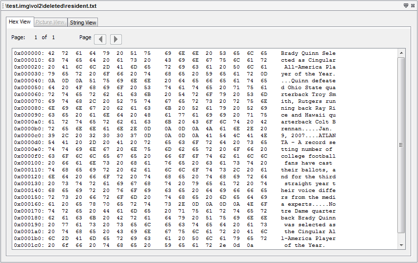

The "Content Viewers" are in the lower right area of the interface. They allow you to view raw data. The data being shown should be have been selected from a Result Viewer window (upper right).
Currently, there are 3 main tabs on "Content Viewer" window:
Here's one of the example of a "Content Viewer" window:
